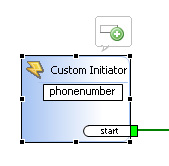
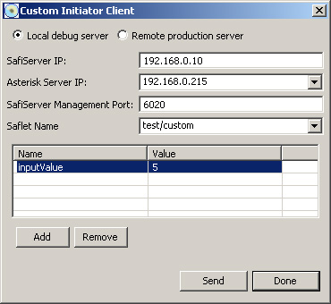

|
|
ActionStep CustomInitiator Description
Is triggered by a "custom event" (set off using the Custom Initiator Client).
Inputs can be added by selecting the CustomInitiator ActionStep and selecting the "add bubble":  Custom Initiator Client: --------------------------------------------------------------------------------------------------  Local debug server / Remote production server : Changes the SafiServer Management Port to the appropriate default value SafiServer IP : The IP address of the SafiServer (production or workshop based debug server) Asterisk Server IP : The Asterisk server to use for call processing features SafiServer Management Port : TCP port that the SafiServer manager service is listening on (default: 6020 for debug server and 7020 for production SafiServer) Saflet Name : Project and Saflet (format: project/saflet) to initiate. Value may be typed in, or selected from the drop down list Values : The values table for passing inputs into the Saflet. Add and Remove buttons allow the addition and deleting of parameters and values can be edited directly in the table. Send : Button to send the Custom Event Soon this initiator will be able to be set off by a standalone application (Windows and Linux) that can be ran via command line interface. Attributes
|